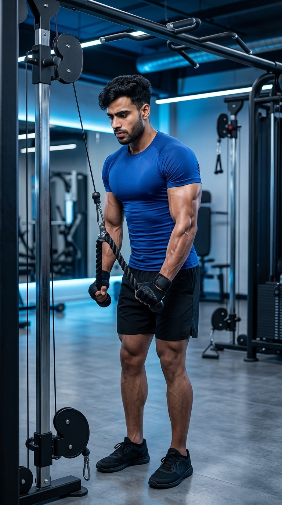

Primary Muscle
Triceps Brachii
Build Bigger Triceps, Improve Arm Strength & Maximize Every Rep with the Rope Attachment
The Rope Triceps Pushdown is one of the most effective cable exercises for building stronger, more defined triceps. The rope attachment allows your hands to move independently, creating a greater range of motion and a stronger contraction at full extension. This exercise targets all three heads of the triceps while improving elbow stability, arm strength, and overall upper-arm development, making it an excellent choice for both beginners and experienced lifters.

Triceps Brachii
Cable Machine & Rope Attachment
Beginner
Isolation
Discover which muscles are primarily responsible for the Rope Triceps Pushdown and how the supporting muscles stabilize the elbows, shoulders, and wrists while the rope attachment allows greater range of motion and a stronger triceps contraction.
Long, Lateral & Medial Heads
Elbow Stabilizer
Grip & Wrist Stability
Shoulder Stabilizer
Discover how the Rope Triceps Pushdown builds stronger, more defined triceps, increases range of motion, improves muscle contraction, and enhances upper-arm strength through constant cable resistance.
Separating the rope handles at the bottom of the movement creates a stronger peak contraction, helping activate all three heads of the triceps for greater muscle growth and definition.
The rope attachment allows your hands to move independently, providing a larger range of motion than a straight bar and promoting more complete triceps activation.
The cable machine keeps continuous resistance on the triceps throughout every repetition, encouraging consistent muscle engagement and effective hypertrophy.
Stronger triceps improve performance during compound exercises such as the bench press, overhead press, and dips by increasing elbow extension strength and lockout power.
The neutral grip of the rope attachment allows the wrists to move naturally, making the exercise more comfortable for many lifters while reducing joint strain.
With adjustable cable resistance and simple technique, the Rope Triceps Pushdown is ideal for beginners learning proper form as well as advanced lifters pursuing progressive overload and muscle development.
Follow these step-by-step instructions to perform the Rope Triceps Pushdown with proper posture, controlled elbow movement, and a full rope extension for maximum triceps activation and muscle growth.
Attach a rope handle to the high pulley of a cable machine and choose a weight that allows you to complete every repetition with strict form and full control.
Start with a lighter weight until you can keep your elbows locked at your sides throughout the movement.
Hold one end of the rope in each hand using a neutral grip. Stand upright with your feet shoulder-width apart, core engaged, chest lifted, and elbows tucked close to your torso.
Keep your shoulders relaxed and avoid letting your elbows move forward before beginning the pushdown.
Extend your elbows and press the rope downward. As your arms approach full extension, separate the rope ends slightly to maximize triceps contraction while keeping your upper arms stationary.
Focus on moving only your forearms while your elbows remain fixed beside your body.
Pause briefly at the bottom with your arms fully extended and the rope ends separated. Contract your triceps as hard as possible before beginning the return phase.
Hold the contraction for about one second to improve your mind-muscle connection and increase triceps activation.
Slowly allow the rope to return to the starting position while maintaining tension on the triceps. Stop before the weight stack touches and repeat for the desired number of repetitions.
Control the lowering phase, avoid using momentum, and never allow your elbows to flare away from your sides.
Avoid these common technique mistakes to maximize triceps activation, maintain proper form, and perform the Rope Triceps Pushdown safely and effectively.
Lifting more weight than you can control often causes poor technique, reduced range of motion, and excessive body movement, limiting triceps activation.
Choose a weight that allows you to keep your elbows fixed, separate the rope fully, and complete every repetition with control.
Keeping the rope handles together throughout the movement reduces the range of motion and prevents maximum triceps contraction at the bottom.
At full elbow extension, gently spread the rope ends apart while keeping your elbows close to your sides.
Allowing your elbows to drift forward or flare outward shifts tension away from the triceps and reduces the effectiveness of the exercise.
Keep your upper arms stationary and allow only your forearms to move during each repetition.
Swinging your torso or using your shoulders to move the rope reduces triceps engagement and increases the risk of poor technique.
Brace your core, maintain an upright posture, and perform every repetition with slow, controlled elbow extension.
Apply these expert coaching cues to improve your Rope Triceps Pushdown technique, maximize triceps activation, and get the greatest benefit from every repetition.
Your upper arms should remain close to your torso throughout the movement. Only your forearms should move while extending your elbows.
Stable elbows keep the tension on your triceps instead of transferring it to your shoulders.
As you reach full elbow extension, gently spread the rope ends apart to achieve a stronger triceps contraction and a greater range of motion.
Pull the rope outward naturally rather than forcing an exaggerated movement with your shoulders.
Lower the rope slowly back to the starting position while maintaining constant tension on the triceps. Avoid letting the weight stack control the movement.
A controlled lowering phase builds more muscle than simply focusing on pushing the weight down.
Increase the resistance only after you can perform every repetition with a full range of motion, proper rope separation, and complete control.
Perfect technique and consistent execution will produce better triceps growth than using heavier weights with poor form.
Progress from learning the Rope Triceps Pushdown with light resistance to performing heavier, more challenging sets while maintaining proper rope separation, strict elbow positioning, and maximum triceps contraction.
Begin with a light weight to master your stance, neutral grip, elbow position, and proper rope movement before increasing the resistance.
Stable posture, elbows tucked at your sides, controlled movement, and proper rope control throughout every repetition.
Perform each repetition with a smooth pushdown, separate the rope ends at full extension, and return slowly while maintaining constant cable tension.
Fixed elbows, full range of motion, controlled tempo, proper rope separation, and continuous muscle tension.
Once you can consistently perform every repetition with perfect technique, gradually increase the resistance while maintaining full triceps contraction and strict form.
Progressive overload, strict execution, controlled tempo, and maintaining complete control without using body momentum.
Challenge your triceps further by incorporating paused repetitions, slow eccentric phases, drop sets, unilateral rope pushdowns, and higher-volume training while maintaining perfect technique.
Advanced intensity techniques, progressive overload, precise execution, and maximizing peak triceps contraction on every repetition.
Find answers to common questions about Rope Triceps Pushdown technique, muscles worked, proper form, rope attachment, training frequency, and progression for stronger, more defined triceps.
The Rope Triceps Pushdown primarily targets all three heads of the triceps brachii—the long head, lateral head, and medial head. Your forearms assist with grip, while your shoulders and core stabilize your body throughout the exercise.
Separating the rope at full elbow extension increases the range of motion and creates a stronger triceps contraction. This helps maximize muscle activation without placing unnecessary stress on the wrists.
Both attachments are effective for building triceps. The rope attachment allows a more natural neutral grip, greater range of motion, and stronger peak contraction, while the straight bar may allow slightly heavier loads. Choose the variation that best fits your training goals.
Yes. The Rope Triceps Pushdown is beginner-friendly because the cable machine provides constant resistance, and the neutral grip often feels more comfortable on the wrists while learning proper technique.
For muscle growth, perform 2–4 working sets of 8–15 repetitions using a weight that allows you to maintain proper technique, full range of motion, and complete control throughout every repetition.
Yes. The triceps make up a significant portion of your upper-arm size. Performing Rope Triceps Pushdowns with progressive overload, proper nutrition, and adequate recovery can help increase arm strength, muscle size, and overall definition.
Explore other triceps exercises that complement the Rope Triceps Pushdown and help you build stronger, bigger arms using different grips, movement patterns, and training variations.


Continue building stronger, bigger triceps with step-by-step exercise guides covering proper technique, muscles worked, common mistakes, expert coaching tips, and progression strategies for every fitness level.